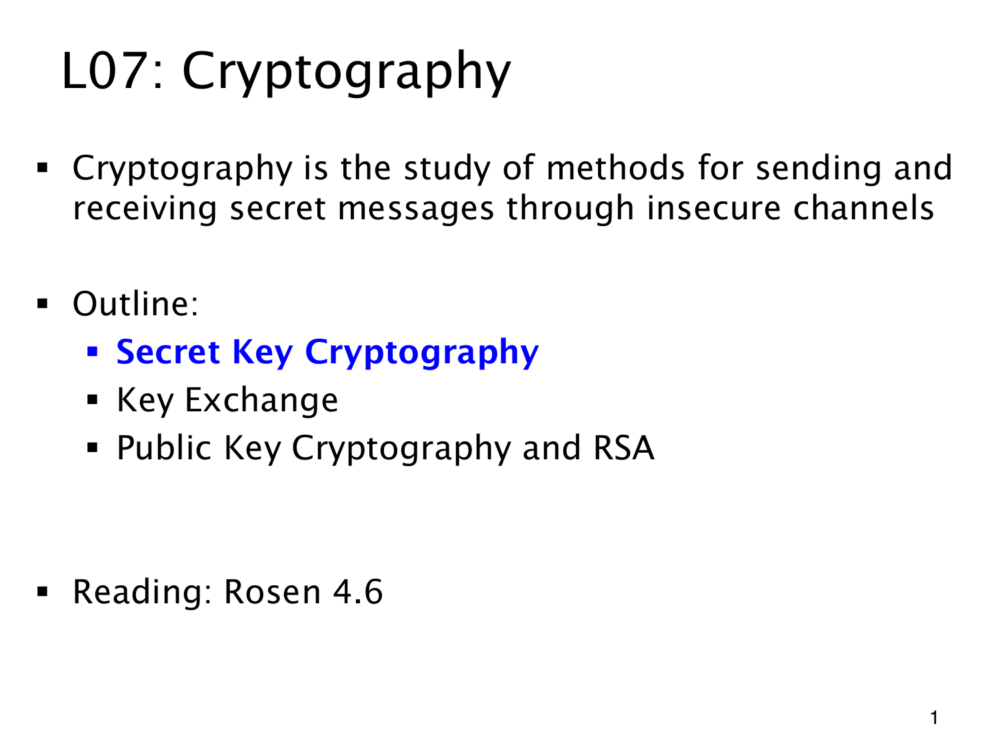

L1.14 · 第 1 页讲解原文
查看这一页课件

消息被看到，仍要守住内容
Cryptography（密码学）研究如何通过不安全的渠道发送和接收秘密消息。第三方可能看到传输的数据，目标是让截获者仍难以读出原意。
本章先从双方已有共享秘密的 Secret Key Cryptography（秘密密钥密码）讲起，目录中以蓝色标出。随后 Key Exchange（密钥交换）讨论尚未共享秘密时怎样协商；Public Key Cryptography and RSA（公钥密码与 RSA）再讨论能否公开加密信息，同时让解密能力留在接收者手中。
前面学过的模运算、逆元和整数性质，将用于表达加密、解密函数。这里还只是介绍问题，没有给出具体密码系统的安全证明。
课件原编号为 L07，网站收录为 L1.14；教材阅读范围是 Rosen 4.6。